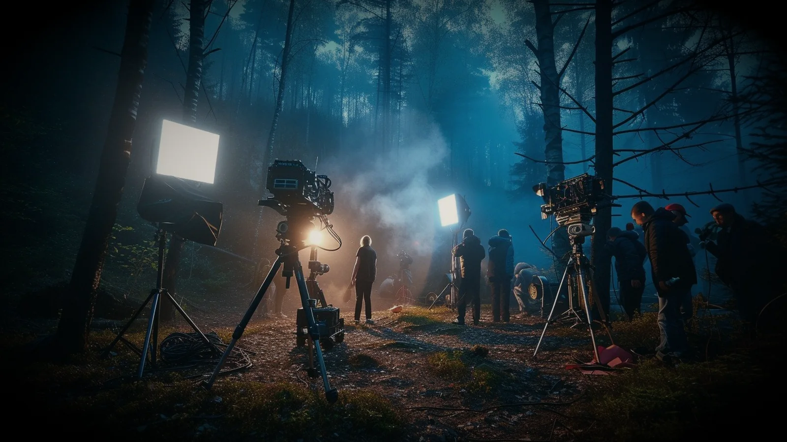
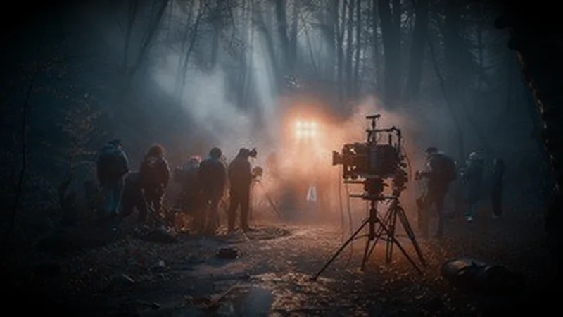
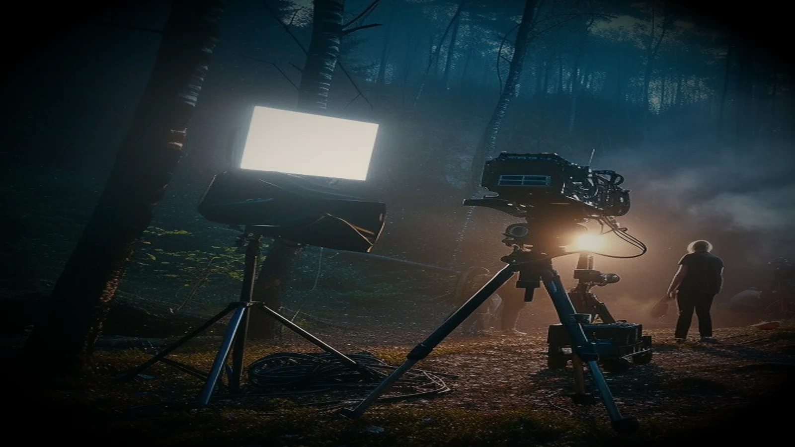
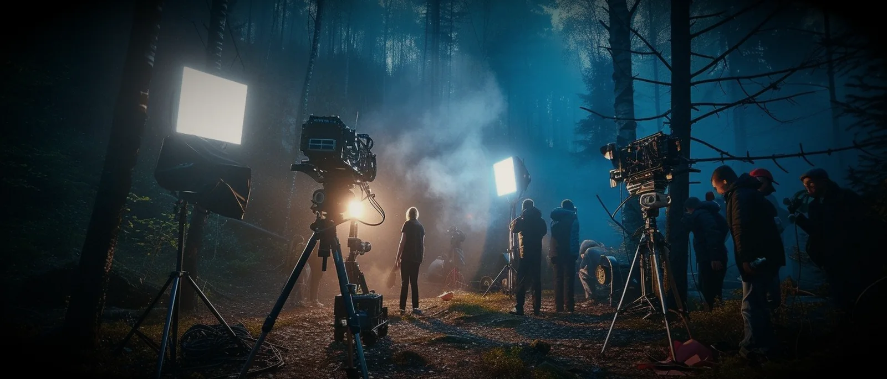

IV
Cinema — Ekalavyan Studios
11.2588° N / 75.7804° E
Ekalavyan Studios: stories in motion.
Writing, directing, acting and film criticism. The forest is the set, the set is the forest — this is where the work begins.
01 — The Reel
Forest, late light · 00:04:12




The frame is a decision about what to withhold.
Film is a discipline of rhythm and restraint — knowing exactly how long to hold a shot before letting it go, and what the silence afterwards is for.
I write, direct and act under Ekalavyan Studios: short films, scripts and cinema criticism — Kerala's storytelling tradition, carried to a screen that is usually in a hurry.
02 — The Programme
Two ongoing bodies of work
01
Ekalavyan Studios
The independent creative collective: short films, scriptwriting, acting and cinema analysis. Active.
02
Visual criticism
Dissecting cinematic grammar, pacing, blocking and thematic subtext across Malayalam, Indian and international cinema.
→ Watch
New work, occasionally
Short films, scripts and essays appear quietly.
The channel is where the finished work lands. If there is a story you want made, that is the door.